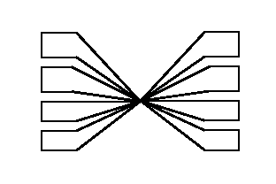

|  |
GLAS3 aims to specify an interface for linear multilinear algebra libraries. This would enable application developers to program against a specific interface and others (e.g. machine vendors) to provide optimised implementations of this interface. These optimised implementations might be deduced from the reference implementation but, additionally, take into account machine-specific instructions, memory hierarchies or other machine-tuned libraries (e.g. BLAS).
GLAS3 is organised in a core, toolboxes or front-ends and back-ends. Front-ends offer a specific functionality using the core and the back-ends are implementations of the core algorithms. This explains the left (back-ends) and right (toolboxes) arms in the logo, starting from the centre (the core). |